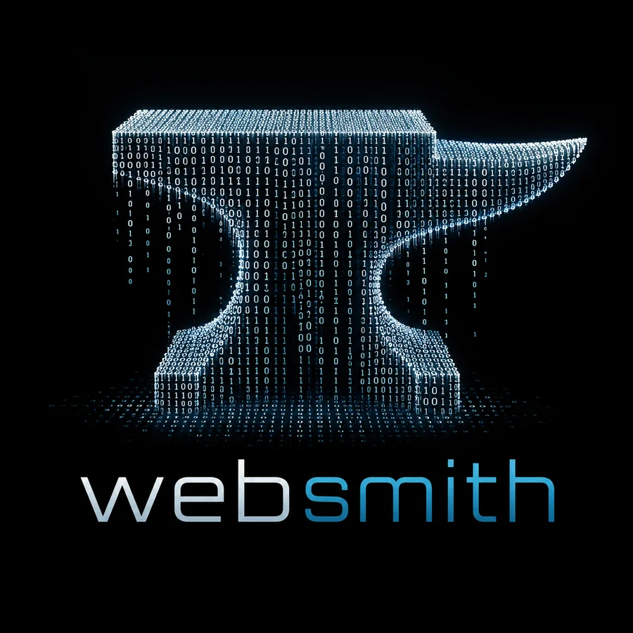

Serving small business and non-profits with digital presence and defense.
Hand-built websites you actually own — and the practical security work that keeps them, and you, out of trouble.
What I do
Two halves of the same job
A website nobody can find isn't presence. A website anyone can take over isn't defense. Small organizations need both, and are usually sold neither.
Presence
Getting you found, and making the first impression count.
- Hand-built sites. One page or several, written by hand — no page-builder bloat, no template shared with ten thousand other organizations.
- Domain and DNS registered in your name and configured correctly the first time.
- Mobile-first and accessible. Readable on a phone, in the sun, in a parking lot.
- Local search. Google Business Profile, maps, and directory listings, so people searching for you actually find you.
- Hosting that costs nothing to run. Static sites need no server, no database, and no monthly platform fee.
- A plain-language handoff so you can edit your own content afterward.
Defense
Closing the doors small organizations usually leave open.
- Email authentication. SPF, DKIM, and DMARC, so your mail reaches inboxes and nobody can send fundraising appeals in your name.
- HTTPS end to end with valid certificates and no mixed-content warnings.
- Account hardening. Multi-factor where it counts, no shared passwords, no single person holding every key.
- Backups that have been restored at least once — not merely scheduled.
- Phishing and donation-fraud awareness for staff and volunteers, aimed at the scams that actually target organizations your size.
- A written inventory of domains, registrars, logins, and renewal dates, so nothing walks out the door when a volunteer moves away.
Security work reduces risk; it does not eliminate it. You'll get a straight answer about what each change protects against and what it doesn't.
Discord
Servers built, and looked after
For a lot of churches, non-profits, and small communities, Discord is where people actually talk. It usually gets set up in an afternoon by a volunteer and then never touched again — which is how it becomes both a maze and a liability. The same two halves apply.
Build & redesign
A server someone can navigate on their first visit.
- Channel and category structure that matches how your group actually works — not forty channels nobody reads.
- Roles and permissions designed deliberately. Who can see what, who can post where, and a written reason for each.
- Onboarding, rules, and verification gates so a new member knows what to do in the first thirty seconds.
- Branding that matches your presence: icon, banner, colors, and channel naming consistent with your website.
- Bots chosen for what you need and configured properly — not fifteen overlapping ones nobody remembers adding.
- Cleanup or migration of an existing server without losing history.
Management
Someone paying attention after launch.
- Moderation setup: auto-moderation, slow modes, and raid and spam protection configured before you need them.
- Permission audits. The most common Discord failure is a role that quietly grants far more than anyone intended.
- Scam and phishing filtering aimed at the link and direct-message scams that target community members.
- A written moderator playbook so volunteers handle problems consistently instead of improvising.
- Announcement, event, and role-assignment workflows that run without you being online.
- Ongoing management — or a handoff and training, if you'd rather run it yourself.
Who it's for
If you've been quoted five figures for a brochure website — or your entire online presence is a Facebook page a member's cousin set up in 2016 and nobody has the password to — that's the gap I work in.
Selected work
Sites built and running
Every one of these is a static site: no database, no plugins to patch, nothing to break at two in the morning.
Kingsbury Methodist Church
One-page site for a rural Texas congregation. Service times, location, and contact, legible on any phone. No build step, no JavaScript.
VISIT →ConCafe Ministries
A searchable archive of 1,400+ devotional podcast episodes, refreshed automatically from the show's RSS feed.
VISIT →Aaron Rea
Professional one-pager for a cloud security and infrastructure engineer — a résumé that survives being opened on a recruiter's phone.
VISIT →DugCanLift
Site and app pages for a privacy-first fitness tracker: no accounts, no ads, no analytics, all data on the device.
VISIT →How I work
Fewer moving parts, fewer problems
Static first
A site with no database and no plugins has almost nothing to attack and nothing to patch. It also loads instantly on a bad rural connection.
You own it
Domain, files, repository, and accounts are all registered to you. If we part ways, you lose nothing and take everything with you.
No rent
Hosting a site like these is free or close to it. You shouldn't pay a subscription to keep your own front door open.
Plain language
You get a written record of what was done and what to do next, in words you can hand to a board, a pastor, or a new volunteer.
Pricing
Quoted per job
Every organization starts from a different place. Some need a first website. Some need a rescue. Some just need their email to stop landing in spam. Pricing depends entirely on what the job actually requires.
Tell me what you have and what isn't working, and you'll get a flat number before any work begins — no hourly surprises. Non-profits and ministries get non-profit rates.
Get in touch
Start a conversation
Describe what you've got and what's not working. A few sentences is plenty.
Email Websmith websmithtx@gmail.com